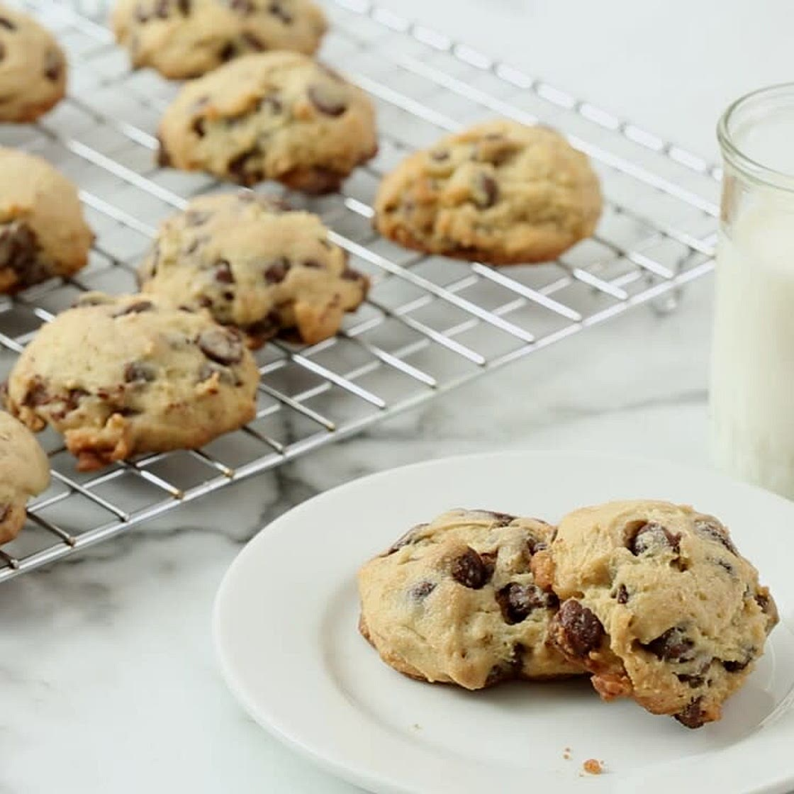

Soft Chocolate Chip Cookies

Description
Our family has been making this recipe several times each year since 2008. These are not your traditional chewy, chocolate chip cookies and instead could be described as a cross between a chocolate chip cookie and a muffin.
They are real crowd pleasers and a long-time favorite among the cousins in our family.
This recipe is slightly adapted from Martha Stewart's original recipe which can be found here.
Ingredients
- 1 ¼ cups all-purpose flour
- ½ teaspoon coarse salt
- ¼ teaspoon baking soda
- 7 tablespoons unsalted butter, room temperature
- ¼ cup granulated sugar
- ¼ cup light-brown sugar, packed
- 1 egg, large, room temperature
- 1 teaspoon pure vanilla extract
- 3 tablespoons sour cream
- ¾ cup semisweet chocolate chips
- ¾ cup milk-chocolate chips
Steps
- Preheat the oven to 350 degrees Fahrenheit.
- In a medium bowl, whisk together the flour, salt, and baking soda. Set aside.
- In a large mixing bowl, beat the butter, granulated sugar, and brown sugar on medium-high speed until the mixture is pale and fluffy (about 3 to 5 minutes).
- Add the egg and vanilla extract to the butter mixture and beat until fully incorporated.
- Reduce mixer speed to low.
- Add half of the flour mixture to the wet ingredients and mix until just combined.
- Add the sour cream and mix until just combined.
- Add the remaining flour mixture and mix again until just combined.
- Stir in the semisweet and milk chocolate chips by hand using a spatula or wooden spoon.
- Cover the dough and freeze it for 10 minutes to firm it up slightly.
- Line baking sheets with parchment paper.
- Using a 1 1/2-inch ice cream scoop or a tablespoon, drop dough onto the prepared baking sheets, spacing the scoops about 2 inches apart.
- Flatten each scoop of dough slightly with your fingers or the back of a spoon.
- Bake the cookies in the preheated oven for 12 to 14 minutes, or until the centers are set and the edges are a pale golden brown.
- Remove the cookies from the oven and allow them to cool on the baking sheets for a few minutes before transferring to a wire rack to cool completely.
Home